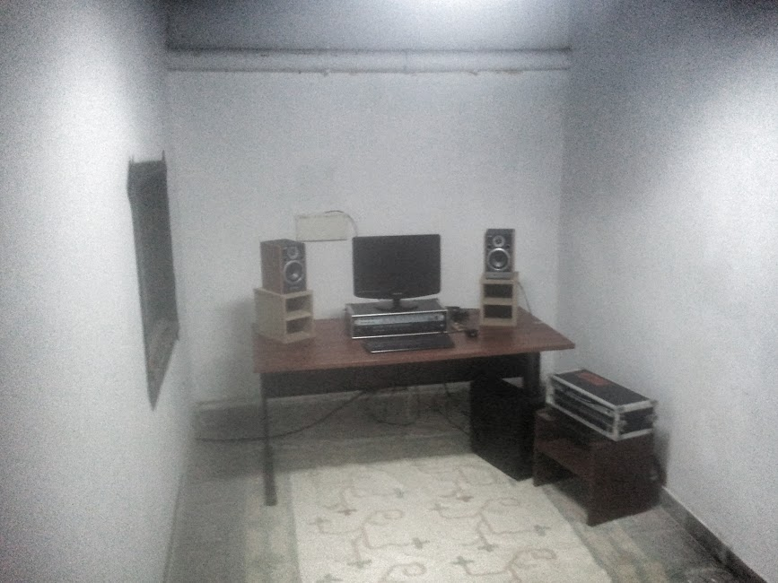
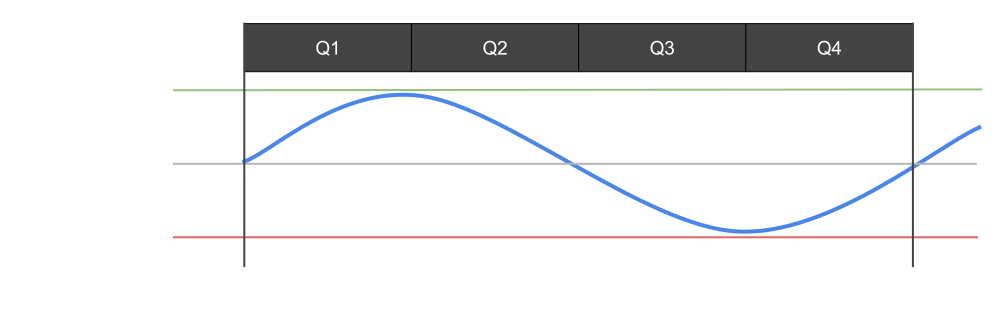
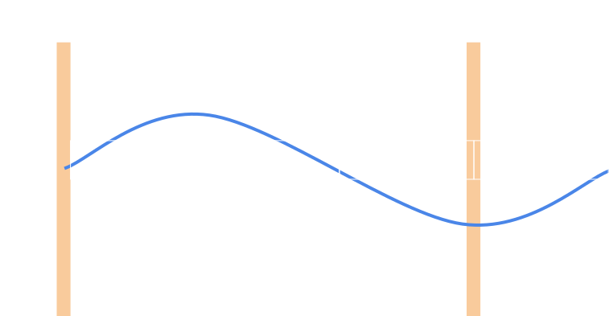
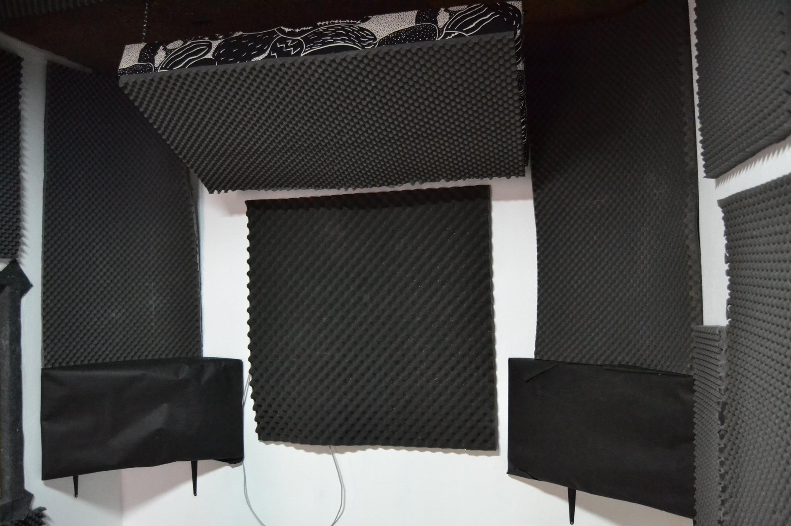

It is said that good studio monitors should be as neutral as possible, with no frequency boosts/cuts, nor any other characteristics that may skew your perspective on what is being played back. Mixing is a feedback loop between the monitors, your hearing and your actions over the material that is being played. Any transformation during this loop will therefore change the final result: lousy monitors, a compressor you decided to use on some track, you being drunk, or bad acoustics in your control room.

A crappy photo of a crappy sounding control room
There is no great advantage on having good speakers, if your room transforms (too much) the sound they produce. This is a very common problem and, by keeping a simple approach, we can divide it in two sub-problems: high frequency boost and low frequency boost. Yes, boost indeed, as in: more sound energy exists in your room at each instant than the energy the speakers are generating. Unfortunately this doesn't mean we came up with a perpetual motion type of thing, it's only reverb and resonance, something like an acoustic greenhouse effect in your room.
Cutting back high frequencies
The high frequency boost is caused by the reverberation your room generates and can be dimmed by reducing the reflective capabilities of the walls, windows, doors, floor, ceiling or any other big reflective surfaces your room may have. To achieve this you can use acoustic panels, neatly hung like fine art around your walls and a bear skin rug on the floor. The amount of treatment you need to apply depends on many factors and there is no one-size-fits-all solution. Aim at an echo-free room where you can still "hear" the space.
A crappy photo of a better sounding control room. Acoustic foam was spread around the walls in order to reduce reverberation.
Finding low frequencies
Due to both their length and amplitude, these waves don't care much about your puny bear skin rug. Their length is such that some of them will match some dimensions of your room, resonating with themselves and forming standing waves. To some extent a kind of acoustic feedback.
Let's say your room has two parallel walls, 3 meters apart. Now consider a wave 4 meters in length is generated from one wall, it would hit the opposing wall some milliseconds after, speed of sound in air permitting. Since this second wall has nothing "big" enough to properly absorb this 4 meter tsunami, a great part of it will be reflected back to the first wall. On its way back, it will cause interference with the signal still being emitted from the first wall.
To better understand that this can cause, let's start by divide the wave in quarters:

Q1: Zero to maximum air pressure
Q2: Maximum to zero air pressure
Q3: Zero to minimum air pressure
Q4: Minimum air pressure (back) to zero
Concurrent waves will sum up and when in phase, will resonate, increasing the pressure or the vacuum. When out of phase, will cancel each other, reducing the pressure or the vacuum. The following table shows the possible outcomes of summing two waves, each in one of the four states.
Q1
Q2
Q3
Q4
Q1
BOOST
MEAN VALUE
CUT
MEAN VALUE
Q2
MEAN VALUE
BOOST
MEAN VALUE
CUT
Q3
CUT
MEAN VALUE
BOOST
MEAN VALUE
Q4
MEAN VALUE
CUT
MEAN VALUE
BOOST
That being said, let's put that wave in our room and see what happens

After 3 meters (end of Q3), the wave will bounce back becoming an inverted (direction, not phase) Q4, ergo a Q3. As the table above shows Q3+Q3=BOOST so, there! There's your problem!
Applying these type of calculation to a real room can be both hard and boring, so here is a cool trick to quickly find these nasty wavelengths.
You can use a sinewave generator, like the one below to help you find these stationary waves.
The volume should sound louder at frequencies that resonate with your room. Lower volume at lower frequencies is also expected, in particular if you're using small audio monitors. In ideal conditions, the volume should be the same from 40/50Hz up.
Cutting back low frequencies
Knowing is fun, but the problem is yet to be fixed. To reduce standing waves you can do a couple of things. The ideal would be not having parallel walls but in home studios that's not always possible. Another approach is adding some serious mass to your room in order to absorb these waves. These are usually called bass traps.

A better photo of the same control room, with a couple of bass traps in the corners and another one hung from the ceiling. Notice that all of the traps both have some mass and create non-parallel surfaces.
Use your ears
Don't try to correct something you can't hear. In order to take full advantage of these type of enhancements, you must understand why you're doing them and "read it on the internet" is not a good reason. Remind yourself that the goal is to mix (or master) better. If that doesn't happen, you've just been spending time and money.